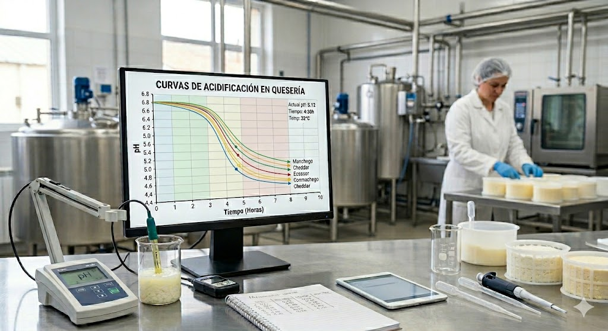
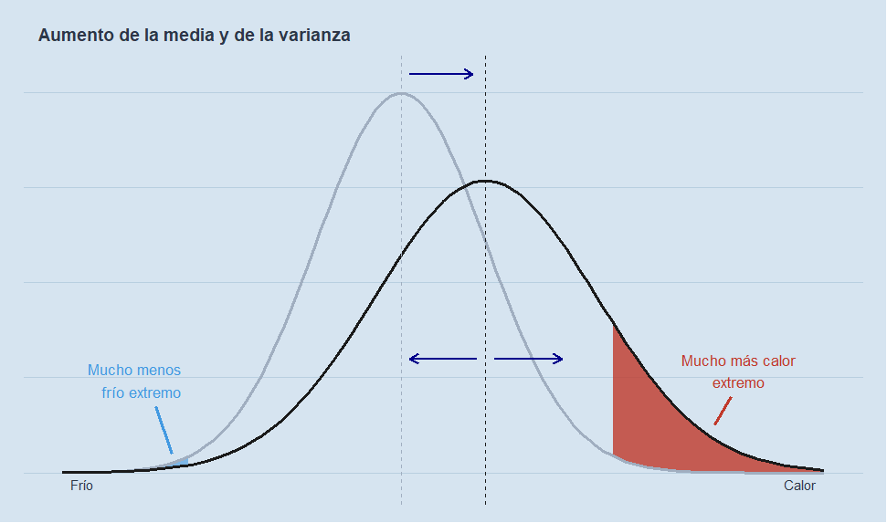
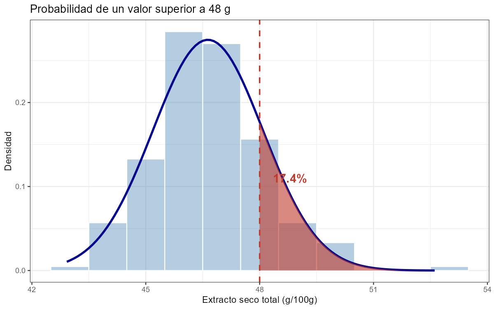
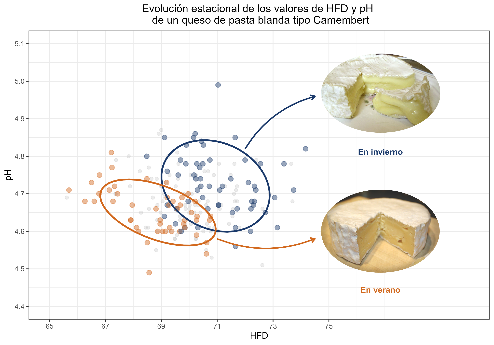
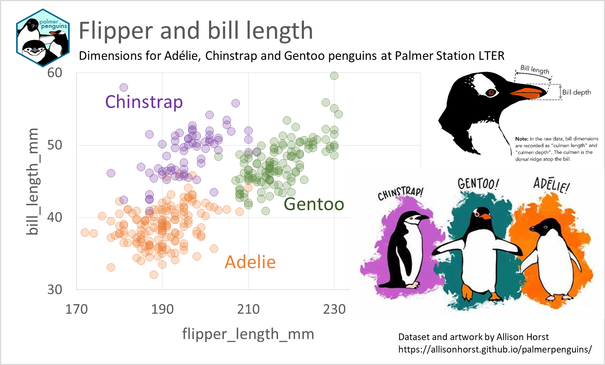
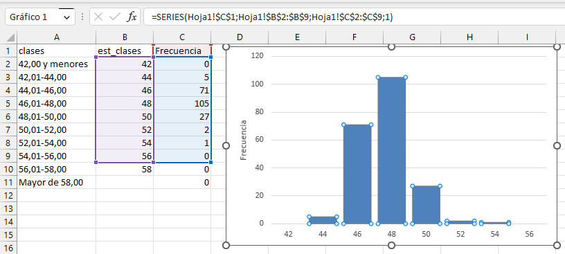

Blog de Juan Riera
Sobre este blog
La mejora continua en la producción quesera
Juan Riera
Categorías
Todas
(9)
clima
(1)
estadística
(6)
Excel
(3)
modelos matemáticos
(1)
queso
(3)
R
(7)

Modelizar la curva de acidificación del queso: qué nos dice el pH cuando aprendemos a escucharlo
queso
modelos matemáticos
R
Hay un dato que todo quesero registra y pocos analizan con la profundidad que merece: la curva de descenso del pH durante la elaboración. No es un simple indicador de…
8 abr 2026

Media, varianza y eventos extremos
estadística
clima
R
Cuando hablamos del clima, solemos pensar en la temperatura media: “este verano ha sido más cálido que el anterior” o “el invierno ha sido más frío de lo normal”. Pero la…
6 abr 2026

De la frecuencia a la probabilidad
estadística
R
Cuando medimos una variable en un conjunto de muestras — por ejemplo, el extracto seco total de una serie de quesos — obtenemos una colección de valores numéricos. El primer…
5 abr 2026
El Gamonéu, un queso azul
queso
El queso Gamonéu (DOP), elaborado en los concejos asturianos de Cangas de Onís y Onís, se define en su pliego de condiciones como «
queso graso, madurado
, de corteza natural…
25 mar 2026
La curva de distribución normal en Excel
estadística
Excel
R
Hay muchos métodos en internet para hacer el gráfico de la distribución normal con Microsoft Excel. Aquí vamos a utilizar un método sencillo mediante los gráficos de…
19 feb 2023

Gráfico de dispersión multiserie anotado con R
queso
R
El gráfico muestra la relación entre el índice de humedad en base al extracto magro (HFD) y el pH en un queso de pasta blanda tipo Camembert, diferenciando los datos según…
10 feb 2023

Gráficos de dispersión multiserie en Microsoft Excel (parte 2)
estadística
Excel
R
En el post anterior hemos visto cómo crear un gráfico de dispersión multiserie a partir de una tabla de datos arreglados, en la que una columna proporciona los criterios…
2 feb 2023
Cómo hacer una tabla de frecuencias en R con
tidyverse
estadística
R
Para hacer una tabla de frecuencias, el primer paso es cargar la librería
tidyverse
y leer los datos en
\(R\)
, en este caso a partir de un archivo
CSV
.
21 ene 2023

Cómo hacer una tabla de frecuencias en Excel
estadística
Excel
Hay varias formas de preparar una tabla de frecuencia en Excel. Aquí usaremos dos métodos:
14 ene 2023
No hay resultados